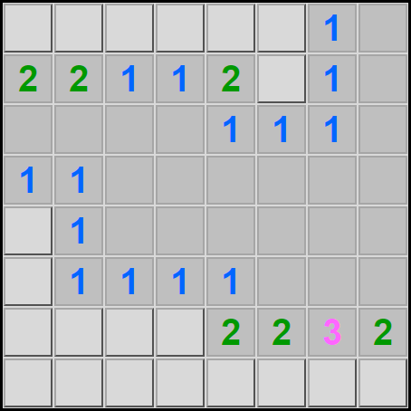

Pravidla Hledání Min
Hra se skládá z horního panelu a z hracího pole.
Horní panel:

Levý ukazatel určuje počet neožnačených min.
Vprostřed se nachází reset tlačítko, které po stistknutí restartuje hru.
Pravý ukazatel je časovač, který se spustí po prvním kliknutí na hrací pole a zastaví se, když skončí hra.
Hrací pole:
Hrací pole se skládá z bezpečných políček a zakrytých min. Hráč musí levým kliknutím myši odkrývat políčka dokud nenajde dobré počáteční postavení.
Číslice na hracím poli určují kolik se v jejich okolních osmi políčcích nachází min.
Pokud hráč najde minu, tak ji může pravým kliknutím myši označit vlaječkou.
Hra končí, pokud hráč klikne na minu. Cílem hry je odhalit všechna bezpečná políčka.
Hodně štěstí